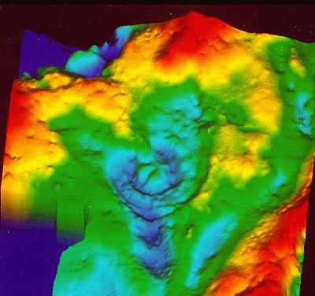
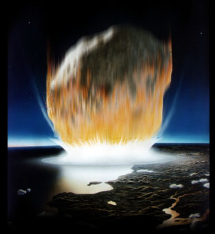
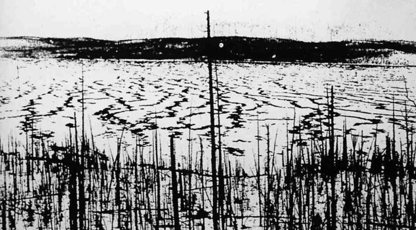

<html>


<!-- Mirrored from www.exitmundi.nl/Comets.htm by HTTrack Website Copier/3.x [XR&CO'2014], Mon, 28 Jun 2021 00:53:05 GMT -->
<!-- Added by HTTrack --><meta http-equiv="content-type" content="text/html;charset=UTF-8" /><!-- /Added by HTTrack -->
<head>
<meta http-equiv="Content-Language" content="en-us">
<meta http-equiv="Content-Type" content="text/html; charset=windows-1252">
<meta name="GENERATOR" content="Microsoft FrontPage 4.0">
<meta name="ProgId" content="FrontPage.Editor.Document">
<title>Waiter, There's A Mountain In My Soup</title>
<base target="_self">
</head>

<body bgcolor="#000000" text="#FFFFFF" link="#00FFFF" vlink="#FF00FF">

<p align="center"><br>
</p>
<blockquote>
  <p class="MsoNormal" style="line-height: 12.0pt; tab-stops: -72.0pt -36.0pt" align="center"><span lang="EN-US" style="letter-spacing:-.15pt"><font face="MS Sans Serif"><font size="4" color="#FF9900">Whether
  you call it the Big One, the Great Exterminator, Lucifer's Hammer, or Extinction
  Level Event -- there's much to be said about big chunks of space rock slamming
  into the earth. One thing's for sure, however. It happened so many times
  before, that it's only likely it will happen again...</font><o:p>
  </o:p>
  </font></span></p>
  
  <p class="MsoNormal" style="text-align:justify;line-height:12.0pt;tab-stops:-72.0pt -36.0pt"><span lang="EN-US" style="letter-spacing:-.15pt"><font face="MS Sans Serif">It
  all comes about within moments. Suddenly, there's a big, fiery ball in the sky,
  just for a few seconds. And then: impact.<o:p>
  </o:p>
  </font></span></p>
  <p class="MsoNormal" style="text-align:justify;line-height:12.0pt;tab-stops:-72.0pt -36.0pt"><span lang="EN-US" style="letter-spacing:-.15pt"><font face="MS Sans Serif">The
  atmosphere will be on fire. A huge column of fire and debris&nbsp; towers up miles into the sky. Hundreds of thousands die instantaneously. For
  thousands of miles around, everyone outdoors is incinerated. People nearby
  simply evaporate.</font></span></p>
  <div align="right">
    <table border="0" width="160" align="right" height="600" cellspacing="5" cellpadding="5">
      <tr>
        <td width="100%"><script type="text/javascript"><!--
google_ad_client = "pub-5046374505441754";
google_ad_width = 160;
google_ad_height = 600;
google_ad_format = "160x600_as";
google_ad_type = "text_image";
//2007-01-16: brede paal rood/grafit
google_ad_channel = "7001327099";
google_color_border = "000000";
google_color_bg = "F0F0F0";
google_color_link = "CC0000";
google_color_text = "000000";
google_color_url = "008000.html";
//--></script>
<script type="text/javascript"
  src="../pagead2.googlesyndication.com/pagead/f.txt">
</script></td>
      </tr>
    </table>
  </div>
<p class="MsoNormal" style="text-align:justify;line-height:12.0pt;tab-stops:-72.0pt -36.0pt"><span lang="EN-US" style="letter-spacing:-.15pt"><font face="MS Sans Serif">The
  impact sends out a shockwave around the globe, just like a stone thrown into a
  pool makes a circle of waves. But this wave rolls through the Earth's crust
  itself, causing death and destruction everywhere. There are
  massive earthquakes. Huge tsunamis. Volcanoes popping open. Millions die, cities are shaken into
  oblivion. On the opposite side of our planet, the waves of destruction slam
  into each other again, causing the earth's crust to tower up, forming a
  massive mountain-ridge within seconds.<o:p>
  &nbsp;
  </font></span></p>
  <p class="MsoNormal" style="text-align:justify;line-height:12.0pt;tab-stops:-72.0pt -36.0pt"><span lang="EN-US" style="letter-spacing:-.15pt"><font face="MS Sans Serif"><font color="#FF9900">And
  that's just the beginning.</font> As the tremor and the seas calm down and the fires
  extinguish, there's more to deal with: the huge, black cloud of debris
  that's thrown up into the stratosphere from the impact site. The debris
  spreads through the stratosphere, covering the Earth with a thick blanket of
  burnt carbon, dust and debris. The Sun is blackened.<br>
  For months or even years to come, the world is covered in darkness, the Sun
  being no more than a vague blot of light in the pitch-black sky. Temperatures
  drop about twenty to forty or even fifty degrees everywhere. The Earth's
  surface freezes. Plants cannot produce oxygen anymore by photosynthesis and
  die. Animals relying on the plants die too. And we -- relying on both the
  animals and the plants -- are in BIG trouble.<o:p>
  &nbsp;
  </font></span></p>
  <p class="MsoNormal" style="text-align:justify;line-height:12.0pt;tab-stops:-72.0pt -36.0pt"><span lang="EN-US" style="letter-spacing:-.15pt"><font face="MS Sans Serif">Oh,
  there are a few pockets of people still hanging on. They're hiding in bunkers,
  or in caves. They hold on for years, as long as their supply of tin cans
  lasts. But when they return to the surface after the endless winter night,
  they find their planet is turned into a barren, lifeless sheet of land, with
  only some deserted ruins reminding of what once was.<o:p>
  </o:p>
  </font></span></p>
  <p class="MsoNormal" style="text-align:justify;line-height:12.0pt;tab-stops:-72.0pt -36.0pt"><span lang="EN-US" style="letter-spacing:-.15pt"><font face="MS Sans Serif">Sure:
  in the end, the Sun returns and temperatures start rising again. So there may
  be a new beginning for mankind after all? Think again. The odds run against
  such optimism. The only thing alive is bacteria and mosses and -- if we're
  lucky -- some insects, rodents and fish. With luck, civilization is `only'
  thrown back into the Stone Age. More likely however is that humanity becomes
  extinct.<o:p>
  </o:p>
  </font></span></p>
  <p class="MsoNormal" style="text-align:justify;line-height:12.0pt;tab-stops:-72.0pt -36.0pt"><span lang="EN-US" style="letter-spacing:-.15pt"><font face="MS Sans Serif"><b><font color="#FFFF00">A
  Brief History of Meteors Going Whammo<o:p>
  </font>
  </o:p>
  </b></font></span></p>
  <p class="MsoNormal" style="text-align:justify;line-height:12.0pt;tab-stops:-72.0pt -36.0pt"><span lang="EN-US" style="letter-spacing:-.15pt"><font face="MS Sans Serif">Oddly,
  until twenty years ago, no one took meteors quite serious. It was widely
  believed that those mean clumps of rock and ice that zoom across the galaxy are not a
  real threat to our planet. A comet entering our atmosphere would instantly
  burn up, and that would be it.<o:p>
  </o:p>
  </font></span></p>
  <p>
<span lang="EN-US" style="letter-spacing:-.15pt"><font face="MS Sans Serif"><font color="#FF9900">All
  that changed in 1978</font>, when two paleobiologists, Louis and Walter Avarez, went
  to Italy to study the so-called <b>K/T barrier</b>: the transition between the
  Cretaceous period (the age of the dinosaurs) and the next prehistoric era, the
  Tertiary period. The K/T Barrier had always been a big mystery. Within only
  several thousands of years -- a twinkling of an eye, in geological terms --
  all the dinosaurs suddenly vanished and nature switched from one geological
  period to the next.<o:p>
  </o:p>
  </font></span>
  </p>
  <p class="MsoNormal" style="text-align:justify;line-height:12.0pt;tab-stops:-72.0pt -36.0pt"><span lang="EN-US" style="letter-spacing:-.15pt"><font face="MS Sans Serif">Digging
  around in the Apennine Mountains, father and son Avarez suddenly realized
  something extraordinary must have happened. Everywhere on Earth, the K/T
  Barrier is marked by a tiny layer of iridium in the ground -- `iridium' being
  a rare chemical substance mostly found in meteorites. It began to dawn on
  Louis and Walter that the dinosaurs didn't just die out because of some
  evolutionary reason. The dinosaurs were simply squashed by a huge meteorite!<o:p>
  </o:p>
  </font></span></p>
  <p class="MsoNormal" style="text-align:justify;line-height:12.0pt;tab-stops:-72.0pt -36.0pt"><span lang="EN-US" style="letter-spacing:-.15pt"><font face="MS Sans Serif">The
  killer meteorite must have slammed into our planet 65 million years ago. It
  must have been an event much like the one described above. There was a long,
  mean period of darkness, while it rained iridium all over the world. Life on
  our planet was almost completely wiped out. All plants and animals bigger than
  a blade of grass became extinct. Just picture that! No wonder the Avarezes coined the killer meteor `<b>The Great Exterminator</b>'.<o:p>
  </o:p>
  </font></span></p>
  <p class="MsoNormal" style="text-align:justify;line-height:12.0pt;tab-stops:-72.0pt -36.0pt"><span lang="EN-US" style="letter-spacing:-.15pt"><font face="MS Sans Serif"><font color="#FF9900">For
  the decade to come</font>, the Exterminator theory was highly controversial. If a
  meteor big enough to kill all the dinosaurs really went boom on our planet,
  surely you should notice an impact crater somewhere?
  Then, in 1991, Nasa sattelites indeed spotted the crater.
  </font></span></p>
  <p class="MsoNormal" style="text-align:justify;line-height:12.0pt;tab-stops:-72.0pt -36.0pt"><span lang="EN-US" style="letter-spacing:-.15pt"><font face="MS Sans Serif">It was a huge scar
  known as the `Cenote Ring', underneath the Mexican peninsula of Yucatan,
  almost impossible to detect by the eye because of millions of years of erosion
  and tectonic movement. Judging by the size of the impact crater, scientists
  calculated the Great Exterminator must have had the size of a mountain.&nbsp;
  </font></span></p>
  <p class="MsoNormal" style="text-align:justify;line-height:12.0pt;tab-stops:-72.0pt -36.0pt"><span lang="EN-US" style="letter-spacing:-.15pt"><font face="MS Sans Serif"> It
  hammered the world of those poor dinosaurs with the impact force of about 100
  million megaton of TNT. That's the equivalent of <i>5,000,000,000&nbsp;</i> atomic
  bombs! By now, some people really started to get itchy about meteors.
  </font></span></p>
  <p class="MsoNormal" style="text-align:justify;line-height:12.0pt;tab-stops:-72.0pt -36.0pt"><span lang="EN-US" style="letter-spacing:-.15pt"><font face="MS Sans Serif"><font color="#FF9900">Next
  came the impact of the comet <b>Shoemaker-Levy 9</b> on Jupiter.</font> For the first
  time in history, man could see what actually happens when a colossal comet
  starts to mess around with your planet. In July 1994, the meteor slammed into
  Jupiter's atmosphere, snapped into pieces, and bombarded the planet for days.
  Huge balls of fire and dust rose up from the planet's surface, and the debris
  darkened parts of Jupiter's atmosphere for weeks. The biggest impact crater,
  carved out by the piece of meteor known as Hale-Bopp, had a size no smaller
  than the entire Earth! By now, everyone realized that the danger of a meteor
  suddenly ending your world is as real as can be. It could happen next year, or
  next month. And well, it could also happen tomorrow.<o:p>
  </o:p>
  </font></span></p>
  <p class="MsoNormal" style="text-align:justify;line-height:12.0pt;tab-stops:-72.0pt -36.0pt"><span lang="EN-US" style="letter-spacing:-.15pt"><font face="MS Sans Serif">From
  those days on, attention for meteors grew and grew. Were the dinosaurs just unfortunate? The troublesome answer is a loud and clear `no'. As a
  matter of fact, the meteor that killed the dino's wasn't the first big piece
  of rock hitting our planet -- and not even the biggest, scientists began to
  realize.<o:p>
  </o:p>
  </font></span></p>
  <p class="MsoNormal" style="text-align:justify;line-height:12.0pt;tab-stops:-72.0pt -36.0pt"><span lang="EN-US" style="letter-spacing:-.15pt"><font face="MS Sans Serif">For
  instance, just over 4,5 billion years ago, when our planet was still very young, an enormous body hit Earth
  with such unimaginable force our planet literally broke up. A huge piece of Earth
  was launched into space. You can still see that lump of earth when you look
  out of your window: the debris rolled up into a ball, and is what we today
  call the Moon.<o:p></o:p>
  </font></span></p>
  <p class="MsoNormal" style="text-align:justify;line-height:12.0pt;tab-stops:-72.0pt -36.0pt"><span lang="EN-US" style="letter-spacing:-.15pt"><font face="MS Sans Serif"><span style="letter-spacing: -.15pt">The
  next massive space attack came a half billion years later: our planet was
  bombarded so heavily with asteroids that the entire crust actually <b>melted</b>.
  That would explain why the oldest rocks on Earth are only 3,9 billion years
  old, while the planet itself is five billion years old.</span></font></span></p>
  <p class="MsoNormal" style="text-align:justify;line-height:12.0pt;tab-stops:-72.0pt -36.0pt"><span lang="EN-US" style="letter-spacing:-.15pt"><font face="MS Sans Serif">And
  then there was another apocalyptic event, some 590 million years ago. One day,
  a meteorite of incredible proportions slammed hard into what's now South
  Australia, digging a crater about four kilometers deep and some 40 kilometers
  wide (currently known as Lake Acraman). Within seconds the whole thing
  vaporized into a huge firestorm. The impact was so devastating, it must have created
  massive earthquakes and 100-meter high tsunamis even hundreds of kilometers
  away.<o:p> Oh
  boy!<o:p>
  </font></span></p>
  <p class="MsoNormal" style="text-align:justify;line-height:12.0pt;tab-stops:-72.0pt -36.0pt">&nbsp;<span lang="EN-US" style="letter-spacing:-.15pt"><font face="MS Sans Serif"><font color="#FF9900">Actually,
  it literally <i>rained&nbsp;</i> Big One's on our little planet.</font>  As
  recently as January 2002, geologists discovered a huge impact crater out of
  the Australian coast: no less than 120 kilometers wide. The meteor that carved
  out the crater slammed into our planet 360 million years ago, wiping out 85
  percent of all species.
  </font></span></p>
  <p class="MsoNormal" style="text-align:justify;line-height:12.0pt;tab-stops:-72.0pt -36.0pt"><span lang="EN-US" style="letter-spacing:-.15pt"><font face="MS Sans Serif">And in 2001, Norwegian researchers suddenly realized that their coast had once been
  the scene of a similar event. A huge meteor went kaboom over Norway 150
  million years ago - speaking in geological terms, right before the Great
  Exterminator.
  The explosion slammed a 40-kilometer wide bump in the
  seabed of the Barents Sea, the so-called `Mjoelnir Crater'. Researchers still
  wonder how it was possible that <i>anything</i>&nbsp; survived.<o:p>
  </o:p>
  </font></span></p>
  <p class="MsoNormal" style="text-align:justify;line-height:12.0pt;tab-stops:-72.0pt -36.0pt"><span lang="EN-US" style="letter-spacing:-.15pt"><font face="MS Sans Serif"><font color="#FF9900">Oh,
  and even when humanity was around, the meteors kept hitting us.</font> For example,
  according to some researchers, the legendary floods of Deucalion, the Sumerian
  Gilgamesh-epos and the biblical Deluge may very well have been caused by a big
  comet plunging into sea somewhere.<o:p>
  </o:p>
  </font></span></p>
  <p class="MsoNormal" style="text-align:justify;line-height:12.0pt;tab-stops:-72.0pt -36.0pt"><span lang="EN-US" style="letter-spacing:-.15pt"><font face="MS Sans Serif">More
  recent, in the year 1490 A.D., the city of Ch'ing Yang in Central China was
  the scene of a weird disaster. The event was recorded in at least ten ancient
  textbooks, all claiming that the event killed many thousands of people as it
  `rained stones and fire'. Likely cause: an asteroid as big as a modest sky
  scraper, going kaboom high up in the Earth's atmosphere.<o:p>
  &nbsp;
  </font></span></p>
  <p class="MsoNormal" style="text-align:justify;line-height:12.0pt;tab-stops:-72.0pt -36.0pt"><span lang="EN-US" style="letter-spacing:-.15pt"><font face="MS Sans Serif">On
  June 30th of 1908, a loud explosion shook the village of Tunguska in
  Middle-Siberia. Local inhabitants saw a huge blast of fire in the sky. There
  was a sudden temperature rise, and a blazing forest fire, lighting up the
  horizon. No less than two thousand square miles of forest were devastated. As
  we know now, a twelve story building sized piece of rock hit the atmosphere
  over Siberia and exploded at a height of some eight kilometers. The energy
  set free at the event was equivalent to 15 megatons of TNT -- a thousand
  atomic bombs!<o:p>
  </font></span></p>
  <div align="right">
    <table border="0" width="251" align="right">
      <tr>
        <td width="100%"><span lang="EN-US" style="letter-spacing:-.15pt"><font face="MS Sans Serif">
  </font></span></td>
      </tr>
      <tr>
        <td width="100%">
          <font face="MS Sans Serif" color="#FFFF00" size="1"><span lang="EN-US" style="letter-spacing:-.15pt"><b>Tunguska,
          Siberia, 1908</b></span></font></td>
      </tr>
    </table>
  </div>
  <p class="MsoNormal" style="text-align:justify;line-height:12.0pt;tab-stops:-72.0pt -36.0pt"><span lang="EN-US" style="letter-spacing:-.15pt"><font face="MS Sans Serif">So,
  it's no pessimistic estimate that our planet can bounce into a freaky piece of
  space rock again. Cosmologists estimate an extinction type comet hits the
  earth once every 20 million years. The odds for a smaller, Tunguska-type
  impact are much higher. On average, this kind of thing happens once in every
  300 years.</font></span></p>
  <p class="MsoNormal" style="text-align:justify;line-height:12.0pt;tab-stops:-72.0pt -36.0pt"><span lang="EN-US" style="letter-spacing:-.15pt"><font face="MS Sans Serif"><span style="letter-spacing: -.15pt">Of
  course, the effect of a meteor impact depends on the place where it hits the
  Earth. The meteor that killed the dinosaurs, for example, hit a soil loaded
  with sulfuric rock, which enormously boosted the comet's devastating effect.
  Had it hit the planet several hundreds of miles westwards, it would have
  plunged into the ocean -- and the dinosaurs probably would have survived. On
  the other hand, if a Tunguska-type meteor happens to </span></font></span><span lang="EN-US" style="letter-spacing:-.15pt"><font face="MS Sans Serif">hit an inhabited area, it will definitely wipe
  it off the face of the Earth entirely. Considering that&nbsp; some 10 percent
  of our planet is inhabited, you could assume that once in every 3,000
  years a meteorite will destroy an inhabited area.</font></span></p>
  <p class="MsoNormal" style="text-align:justify;line-height:12.0pt;tab-stops:-72.0pt -36.0pt"><span lang="EN-US" style="letter-spacing:-.15pt"><font face="MS Sans Serif">Meanwhile, the people at Nasa try to reassure us, by claiming they keep an open
  eye to the sky. The message they propagate is that a meteor that wants to hit
  our planet surely will be spotted in time and destroyed -- whether it is by a
  nuclear bomb or by a team of Bruce Willis-like he-men going out in a space
  shuttle.
  </font></span></p>
  <p class="MsoNormal" style="text-align:justify;line-height:12.0pt;tab-stops:-72.0pt -36.0pt"><span lang="EN-US"><font face="MS Sans Serif"><span style="letter-spacing: -.15pt"><font color="#FF9900">No
  offense -- but that's pure propaganda.</font> </span></font></span><span lang="EN-US" style="letter-spacing:-.15pt"><font face="MS Sans Serif">The
  harsh fact is that such `protection' is far less reliable than Nasa wants us
  to believe. For example, in March 1998, a BIG comet nearly hit us. Remarkably,
  no one saw it coming. Because it came straight at us, the thing was only
  visible as a tiny speck in the sky, not as a distinct, moving object
  traversing the cosmos from left to right. Consequently, no one noticed it -- until it passed.</font></span></p>
  <div align="center">
    <table border="0" height="52">
      <tr>
        <td height="23">
          <div align="left">
            <table border="1" height="74" bordercolor="#FF0000" bgcolor="#000000" cellspacing="0" background="sterrendiepzwak.jpg" width="516">
              <tr>
                <td height="17" align="center" width="109">
                  <p align="left"><b><font face="MS Sans Serif" size="2" color="#FF0000">Meteor
                  size</font></b></td>
                <td height="17" align="center" width="132">
                  <p align="left"><b><font face="MS Sans Serif" size="2" color="#FF0000">Impact
                  force</font></b></td>
                <td height="17" align="center" width="147">
                  <p align="left"><b><font face="MS Sans Serif" size="2" color="#FF0000">Destruction
                  rate</font></b></td>
                <td height="17" align="center" width="110">
                  <p align="left"><b><font face="MS Sans Serif" size="2" color="#FF0000">Chance
                  (est.)</font></b></td>
              </tr>
              <tr>
                <td height="17" align="center" width="109">
                  <p align="left"><font face="MS Sans Serif" color="#FFFFFF" size="2">50
                  m. across</font></td>
                <td height="17" align="center" width="132">
                  <p align="left"><font face="MS Sans Serif" color="#FFFFFF" size="2">15
                  Megaton of TNT</font></td>
                <td height="17" align="center" width="147">
                  <p align="left"><font face="MS Sans Serif" color="#FFFFFF" size="2">City
                  sized</font></td>
                <td height="17" align="center" width="110">
                  <p align="left"><font face="MS Sans Serif" color="#FFFFFF" size="2">1:300</font></td>
              </tr>
              <tr>
                <td height="17" align="center" width="109">
                  <p align="left"><font face="MS Sans Serif" color="#FFFFFF" size="2">200
                  m. across</font></td>
                <td height="17" align="center" width="132">
                  <p align="left"><font face="MS Sans Serif" color="#FFFFFF" size="2">100
                  Mt TNT</font></td>
                <td height="17" align="center" width="147">
                  <p align="left"><font face="MS Sans Serif" color="#FFFFFF" size="2">Continent
                  sized</font></td>
                <td height="17" align="center" width="110">
                  <p align="left">&nbsp;</td>
              </tr>
              <tr>
                <td height="16" align="center" width="109">
                  <p align="left"><font face="MS Sans Serif" color="#FFFFFF" size="2">1,000
                  m. across</font></td>
                <td height="16" align="center" width="132">
                  <p align="left"><font face="MS Sans Serif" color="#FFFFFF" size="2">100,000
                  Mt TNT</font></td>
                <td height="16" align="center" width="147">
                  <p align="left"><font face="MS Sans Serif" color="#FFFFFF" size="2">Half
                  of the world</font></td>
                <td height="16" align="center" width="110">
                  <p align="left"><font face="MS Sans Serif" color="#FFFFFF" size="2">1:2,000,000</font></td>
              </tr>
              <tr>
                <td height="19" align="center" width="109">
                  <p align="left"><font face="MS Sans Serif" color="#FFFFFF" size="2">10,000
                  m. across</font></td>
                <td height="19" align="center" width="132">
                  <p align="left"><font face="MS Sans Serif" color="#FFFFFF" size="2">100,000,000
                  Mt TNT</font></td>
                <td height="19" align="center" width="147">
                  <p align="left"><font face="MS Sans Serif" color="#FFFFFF" size="2">Extinction
                  level event</font></td>
                <td height="19" align="center" width="110">
                  <p align="left"><font face="MS Sans Serif" color="#FFFFFF" size="2">1:30,000,000</font></td>
              </tr>
            </table>
          </div>
        </td>
      </tr>
      <tr>
        <td height="17" align="left" valign="middle">
<blockquote>
  <p class="MsoNormal" style="line-height: 12.0pt; tab-stops: -72.0pt -36.0pt" align="center">
  <span lang="EN-US" style="letter-spacing:-.15pt"><font face="MS Sans Serif" color="#FFFF00" size="1"><b>Death
  statistics.</b> The Norwegian meteor was 2 Kilometers across; the meteor that
  carved out Lake
  Acraman in Australia 4 Kilometers, and the comet that killed the dinosaurs 10
  Kilometers. The impact force also </font></span><span lang="EN-US" style="letter-spacing:-.15pt"><font face="MS Sans Serif" color="#FFFF00" size="1"> depends on
  the velocity of the object, which ranges roughly from 50,000 to 100,000 Kilometers
  per hour.<o:p>
  </font></span></p>
</blockquote>

        </td>
      </tr>
    </table>
  </div>
  <p class="MsoNormal" style="text-align:justify;line-height:12.0pt;tab-stops:-72.0pt -36.0pt"><span lang="EN-US" style="letter-spacing:-.15pt"><font face="MS Sans Serif"><o:p></o:p>Then there's the eerie problem of ice comets. Many comets are in fact `dirty
  snowballs' made of dust and ice. The problem is we cannot really detect these
  comets, because conventional equipment sees right through them. You can only
  spot an ice comet when it comes so close to the Sun that it begins to melt.
  We'll recognize it by its tail by then. But according to many critical
  astronomers, this will be much too late to take any action.</font></span></p>
  <p class="MsoNormal" style="text-align:justify;line-height:12.0pt;tab-stops:-72.0pt -36.0pt"><span lang="EN-US" style="letter-spacing:-.15pt"><font face="MS Sans Serif">Besides,
  there are no reliable ways of getting rid of a comet racing at us. Pleas for a
  kind of `space shield' protecting us from big pieces of rock have not yet
  raised any political backing. And it is doubtful whether Bruce Willis is
  willing to go out to kill the Big One if it's coming.<o:p>
  </o:p>
  </font></span></p>
  <p class="MsoNormal" style="text-align:justify;line-height:12.0pt;tab-stops:-72.0pt -36.0pt"><span lang="EN-US" style="letter-spacing:-.15pt"><font face="MS Sans Serif">Oh,
  and talking about Big One's: in 2039, another HUGE comet will pass us by
  `only' some millions of Kilometers. However, this estimate is not completely
  fireproof, for one thing because comets are very sensitive to variations in their
  trajectory. <o:p>
  </o:p>
  </font></span></p>
  <p class="MsoNormal" style="text-align:justify;line-height:12.0pt;tab-stops:-72.0pt -36.0pt"><span lang="EN-US" style="letter-spacing:-.15pt"><font face="MS Sans Serif">Here's
  what to do. Put on your best helmet -- and keep your fingers crossed.
  </font></span></p>
  <div align="right">
    <table border="0">
      <tr>
        <td><a href="mailto:mke@xs4all.nl">
          </a></td>
        <td><a href="intro2.html"></a></td>
      </tr>
    </table>
  </div>
  <p class="MsoNormal" style="text-align:justify;line-height:12.0pt;tab-stops:-72.0pt -36.0pt">&nbsp;<div align="center">
    <center>
    <table border="0" width="728" height="90">
      <tr>
        <td width="100%"><script type="text/javascript"><!--
google_ad_client = "pub-5046374505441754";
google_ad_width = 728;
google_ad_height = 90;
google_ad_format = "728x90_as";
google_ad_type = "text_image";
//2007-01-16: rood grafiet leaderbord
google_ad_channel = "5833008090";
google_color_border = "CC0000";
google_color_bg = "CCCCCC";
google_color_link = "CC0000";
google_color_text = "333333";
google_color_url = "666666.html";
//--></script>
<script type="text/javascript"
  src="../pagead2.googlesyndication.com/pagead/f.txt">
</script>
      </tr>
    </table>
    </center>
  </div>
</blockquote>


<p><!-- End Webstats4U code -->
</p>
<p align="center"><font size="2">All texts Copyright © Exit Mundi / AW Bruna
2000-2007.<br>
You're not allowed to copy, edit, publish, print or make public any material
from this website without written permission by Exit Mundi.</font></p>


<!-- Mirrored from www.exitmundi.nl/Comets.htm by HTTrack Website Copier/3.x [XR&CO'2014], Mon, 28 Jun 2021 00:53:10 GMT -->
</html>
